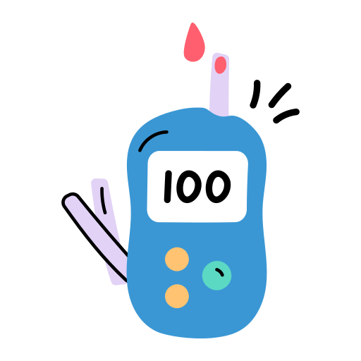
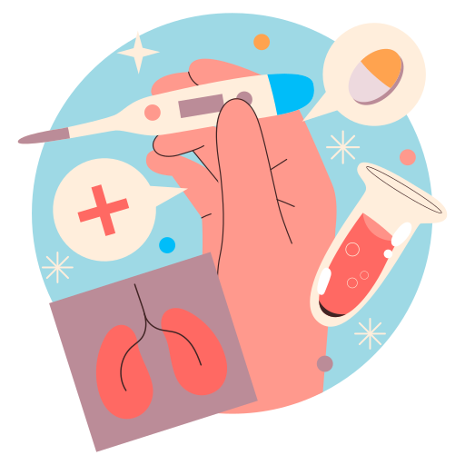
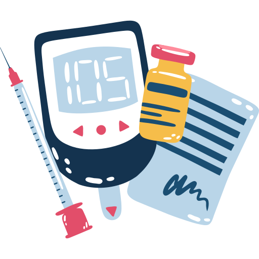
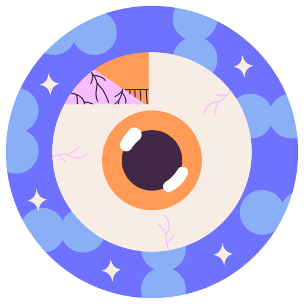

DiabEyes
Eyes Reflect Your Health
Discover the Hidden Clues in Your Gaze
" DiabEyes " is your comprehensive platform for proactive diabetes management. Using advanced algorithms and eye imaging technology, we empower individuals to predict their diabetes risk through a simple eye scan. Take control of your health with DiabEyes and stay ahead of potential health complications. The eyes serve as crucial indicators for detecting signs of diabetes. Eye examinations and retinal imaging play a vital role in identifying the effects of diabetes on eye health.
Methods for observe and monitor diabetes
-
Blood sugar measurement
- Urine tests
-
Eye examination
.png)
-
Signs and symptoms
There are several different methods to observe and monitor diabetes:
-

Blood sugar measurement: One of the most common indicators of diabetes is changes in blood sugar levels. A glucometer can be used to measure a person's blood sugar level. This involves taking a drop of blood from the blood vessels. Various measurements are often taken, including fasting blood sugar (measured in a fasting state), postprandial blood sugar (measured 2 hours after a meal), and sometimes the HbA1c level (a test showing the average blood sugar level over 3 months).
-
Urine tests: Some symptoms of diabetes can also be seen in urine. A person with glucose (sugar) in their urine may be at risk of diabetes. However, the presence of glucose in urine is not as accurate as blood tests for showing blood sugar levels.
-

Eye examination: In advanced stages of diabetes, significant changes can be observed in the eyes. A condition called diabetic retinopathy can cause damage to the retina (the eye's inner layer). Eye examination is important for early detection of such complications.
-
Signs and symptoms: Symptoms of diabetes include excessive thirst, frequent urination, excessive hunger, weakness, blurred vision, and prolonged wound healing. If these symptoms are present, the person may be at risk of diabetes and should consult a healthcare professional.